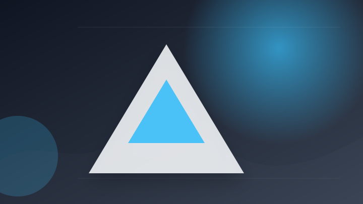
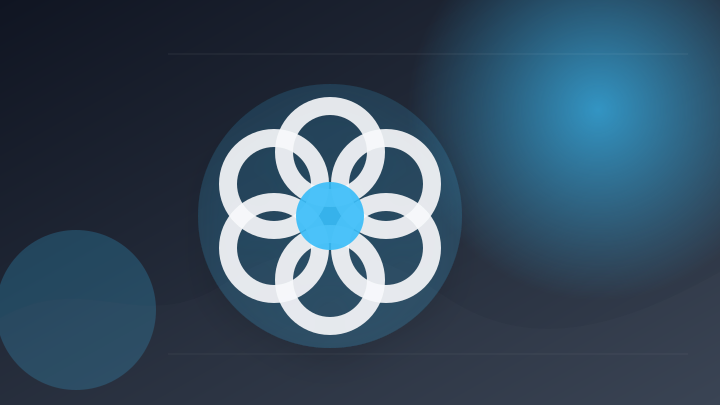
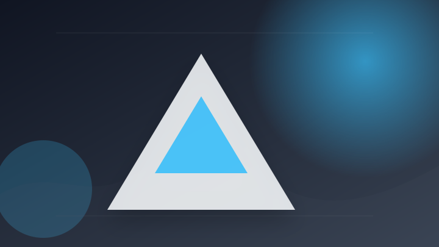
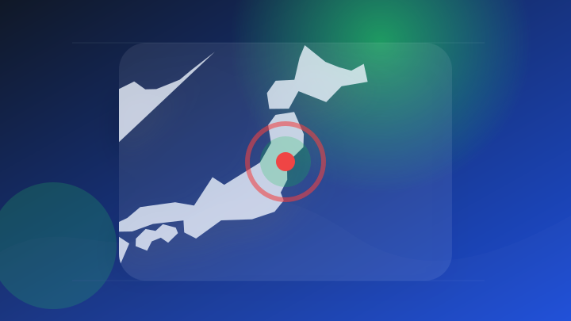
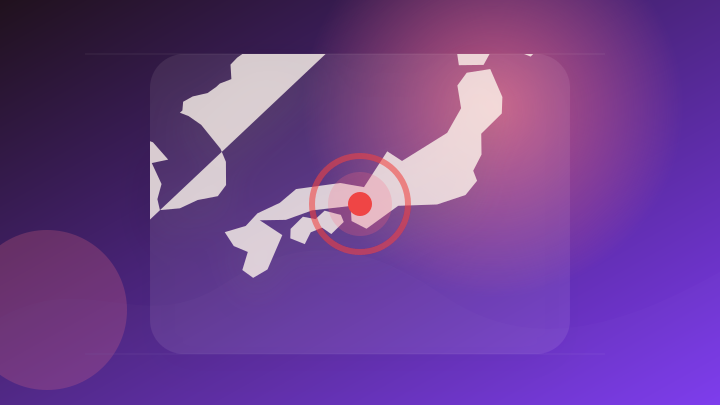

AI
6 topics

AI 専門メディア 報道確認 仕事で使える
Claude Codeで複数AIを束ねる「Fugu」が使えるように
注目ポイント注目度 64点
AI 専門メディア 報道確認 仕事で使える
ニュース OpenAI、「ChatGPT」にHealth機能を導入、米国のユーザーが利用可能
注目ポイント注目度 64点
AI 配信記事 速報・続報待ち 仕事で使える
令和8年版情報通信白書が公開に 生成AI、企業導入は進むも“活用の壁”は依然高め
注目ポイント注目度 61点

AI 配信記事 速報・続報待ち 仕事で使える
ChatGPT Workは「仕事」の枠を超えた──サム・アルトマンCEOのひと言で9人分の旅行サイトが完成
注目ポイント注目度 61点

AI 配信記事 速報・続報待ち 仕事で使える
【Claude Opus 5】自治体AI zevoに新たなClaude系LLMが2026年7月27日に追加！
注目ポイント注目度 61点
AI 配信記事 速報・続報待ち 仕事で使える
ChatGPT Voiceがデスクトップ対応、Codex や Work も音声モードで指示が可能に GPT-Liveで相槌も打てる自然な会話実現
ChatGPT Voiceがデスクトップ対応、Codex や Work も音声モードで指示が可能に GPT-Liv…
注目ポイント注目度 61点
IT業界
2 topics
政治
2 topics
社会
3 topics
事件・事故
6 topics

事件・事故 大手報道 報道確認 動向確認
放火容疑で逮捕の会社役員の女性を起訴猶予で不起訴処分 仙台地検
注目ポイント注目度 70点

事件・事故 大手報道 報道確認 動向確認
6.9億円相当窃盗容疑、2人逮捕 「高級な家があるから一緒に」 [大阪府]
注目ポイント注目度 70点
事件・事故 大手報道 報道確認 動向確認
「女性が困惑する反応に楽しみ覚えた」社用車内で下半身露出 容疑で男逮捕 余罪も捜査
注目ポイント注目度 70点
事件・事故 配信記事 速報・続報待ち 要注意
旭川中心部で乗用車同士の交通事故 運転していた９８歳の男性が死亡
注目ポイント注目度 67点
事件・事故 配信記事 速報・続報待ち 要注意
バイク死亡事故、沖縄で相次ぐ 浦添市で18歳男子専門学校生、本部町で60歳男性が亡くなる
注目ポイント注目度 67点
事件・事故 配信記事 複数社で確認 動向確認
ロ事件５０年、国民後押しで捜査結実
注目ポイント独立2媒体｜注目度 61点